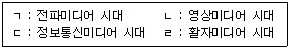
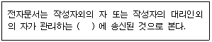

사무자동화산업기사 (2008-07-27 기출문제)
1과목: 사무자동화 시스템
1. 다음 중 사무자동화 정의와 관계없는 것은?
- 컴퓨터 기술
- 통신 기술
- 단순화 기술
- 시스템과학 기술
(정답률: 65%)

2. 다음 중 사무실 공간 설계 방침과 거리가 먼 것은?
- 문서 발생의 극대화
- 일의 흐름을 고려한 부문 배치
- 건강하고 쾌적한 사무환경 조성
- 미래 환경변화에 대비한 공간의 융통성 확보
(정답률: 70%)
3. 인텔리전트 빌딩(Intelligent Building)에 있어서 시스템 통합화의 서비스 목적과 관계가 가장 먼 것은?
- ISDN에 의한 서비스
- OA 시스템에 의한 서비스
- 전자통신 시스템에 의한 서비스
- 빌딩 자동화에 의한 서비스
(정답률: 66%)
4. 통신서비스 사업자가 서비스를 이용 중인 가입자에 대한 사용 요금을 계산, 청구, 수납하는 등의 요금관련 업무를 자동으로 처리해 주는 시스템은?
- 지로 시스템
- 빌링 시스템
- 자동이체 시스템
- ATM 시스템
(정답률: 72%)
5. 다음 사무자동화 수행 방식 중 하향식 접근 방식에 관한 것은?
- 단기간에 구축할 수 있으며 최고 경영자가 욕구하는 최적의 시스템을 구축한다.
- 기존 조직의 거부감이 상대적으로 적어 자연스럽게 도입된 기기의 활용이 가능하다.
- 사무자동화 도입을 조직의 하부 단위 업무로부터 점자 상층부로 확대 실시한다.
- 사무 개선으로 시작하는 예가 많으며 단계적으로 고도의 자동화 수준으로 확대해 간다.
(정답률: 66%)
6. CD-ROM에 대한 다음 설명 중 옳지 않은 것은?
- 레이저 빔을 비추어 굴절하는 정도로써 정보를 읽는다.
- 광디스크의 일종이다.
- 읽기만 하고 CD-ROM에 쓸 수는 없다.
- 주기억 장치로 사용된다.
(정답률: 65%)
7. 다음 중 컴퓨터의 처리 속도 단위를 나타내는 것으로 옳지 않은 것은?
- ns
- ps
- os
- fs
(정답률: 81%)
8. 사무자동화 기능 중 모든 기능을 합리적으로 결합시켜 업무처리를 신속, 정확하게 하는 것은?
- 문서화 기능
- 통신 기능
- 자동화 기능
- 정보 활용 기능
(정답률: 62%)
9. 다음 중 어떤 데이터를 기억장치로부터 읽거나 기억시킬 때 소요되는 시간은?
- Access Time
- Seek Time
- Search Time
- Read Time
(정답률: 62%)
10. 다음 중 뉴미디어의 발달과정을 올바르게 나열한 것은?

- ㄱ-ㄴ-ㄷ-ㄹ
- ㄹ-ㄴ-ㄱ-ㄷ
- ㄱ-ㄹ-ㄴ-ㄷ
- ㄹ-ㄱ-ㄴ-ㄷ
(정답률: 85%)
11. 다음 중 그룹웨어(Groupware)에 대한 설명으로 가장 거리가 먼 것은?
- 협동 작업을 지원하기 위해 컴퓨터 기술을 이용하는 시스템의 통칭이다.
- 컴퓨터 지원 협동 작업을 가능하게 하는 하드웨어 및 소프트웨어 시스템이다.
- 클라이언트를 사용자 단말기로 하고 서버를 호스트 컴퓨터로 하는 네트워크 시스템이다.
- 사람간의 프로세스의 생산성과 기능성을 증진하는 컴퓨터로 중재되는 시스템이다.
(정답률: 54%)
12. 이미지의 전송을 빠르게 하기 위하여 압축 저장하는 방식으로 저장할 수 있는 이미지가 256색상으로 제한되어 있는 것은?
- BMP
- JPEG
- GIF
- ZIP
(정답률: 69%)
13. 사무자동화의 구체적 효과는 정량적 효과와 정성적 효과로 나누어 생각할 수 있다. 다음에서 정량적 효과에 대한 설명으로 옳은 것은?
- 문제 해결에 대한 보조 도구로 활용
- 보고서나 자료를 필요한 내용에 따라 작성
- 기업 내에서의 사기 향상으로 업무능률 향상
- 재고, 설비, 금리 등에 대한 고정비, 간접비의 개선
(정답률: 77%)
14. 관계데이터베이스에서 기본 키(Primary Key)가져야할 성질은?
- 공유성
- 중복성
- 식별성
- 연결성
(정답률: 72%)
15. 다음 중 전자결재 시스템의 요건으로 옳지 않은 것은?
- 사용자 프라이버시와 익명성을 보장한다.
- 안전한 결제를 위한 소액 결제는 방지한다.
- 안전하고도 다양한 대금 지불 방법을 지원한다.
- 거래 당사자의 신용확인을 위한 기반을 조성한다.
(정답률: 85%)
16. 사무자동화 접근 방법 중 사무자동화 대상이 되는 모든 시스템, 즉 전 업무 또는 전 계층에 걸쳐 실시되는 것은?
- 전사적 접근방법
- 공통과제형 접근방법
- 기기도입형 접근방법
- 계층별 접근방법
(정답률: 70%)
17. 그래픽 프로그램에서 그림을 그린 후 문서편집기와 연결하면 나중에 그림이 바뀔 경우 문서편집기의 그림도 바뀌는 기능은?
- OLE 기능
- 클립보드 기능
- activeX 기능
- 매크로 기능
(정답률: 63%)
18. 사무자동화 자료처리를 위한 순차 파일의 장점으로 옳지 않은 것은?
- 일괄처리 중심의 업무처리에 적합하다.
- 파일 내에 필요 없는 레코드 삭제가 용이하다.
- 어떤 매체라도 순차 편성 파일의 기록 매체가 될 수 있다.
- 순차적으로 실제 데이터만 저장되므로 기억공간의 활용이 높다.
(정답률: 42%)
19. 다음 중 저장된 내용을 이용해 접근하는 기억장치는?
- associative memory
- USB memory
- cache memory
- DMA
(정답률: 50%)
20. 데이터의 소유자나 독점자 없이 누구나 손쉽게 데이터를 생산하고 인터넷에서 공유할 수 있도록 한 사용자 참여 중심의 인터넷 환경은?
- 인트라넷
- VPN
- 웹 2.0
- 유비쿼터스
(정답률: 74%)
2과목: 사무경영관리 개론
21. 사무분석기법 중 사무처리방법의 파악을 위하여 사무작업시간이 적정한가를 분석하는 기법은?
- 사무공정분석
- 사무작업분석
- 사무가동분석
- 사무분담분석
(정답률: 73%)
22. 경영과 사무의 관계를 잘못 서술한 것은?
- 판매전표를 작성하는 경우 이는 사무이며, 동시에 경영의 판매활동을 처리하는 것이다.
- 경영의 목적은 사무에 있고, 사무활동은 작업적 측면과 기능적 측면으로 분류할 수 있다.
- 사무의 간소화, 표준화, 기계화는 동시에 경영활동의 간소화, 표준화, 기계화를 성취하는 것이다.
- 사무기능도 경영기능과 같이 생산사무, 재무사무, 인사사무, 판매사무 등으로 나눌 수 있다.
(정답률: 58%)
23. 사무조직화의 중요성을 설명한 것으로 가장 적합하지 않은 것은?
- 사무업무의 흐름을 명확히 한다.
- 개별적 직무에 대한 지침을 제공한다.
- 상급자가 권한의 전부를 위임하여 하급자가 업무처리를 용이하게 한다.
- 각 구성원의 활동을 조직목표와 연결시켜 직무수행 성과를 증대시킨다.
(정답률: 77%)
24. 다음 중 사무관리의 원칙과 가장 관계 없는 것은?
- 용이성
- 주관성
- 정확성
- 신속성
(정답률: 72%)
25. 다음 ( ) 안에 알맞은 것은?

- 컴퓨터에 등록한 때
- 컴퓨터에 저장된 때
- 컴퓨터에 입력된 때
- 컴퓨터에 출력된 때
(정답률: 70%)
26. 독립적으로 창작된 프로그램과 다른 프로그램과의 호환에 필요한 정보를 얻기 위하여 프로그램코드를 복제 또는 변환하는 것은?
- 프로그램코드역분석
- 프로그램 패치
- 프로그램코드분석
- 컴포넌트프로그램
(정답률: 64%)
27. 산업보건기준에 관한 규칙에서 소음 작업은 1일 8시간 작업을 기준으로 몇 데시벨 이상의 소음이 발생하는 작업을 말하는가?
- 50
- 75
- 85
- 100
(정답률: 47%)
28. 부하, 상사, 교관이 하나의 문제를 놓고 함께 해결하여 사무 간소화를 추진해 가는 방법은?
- 자발적 접근법
- 문제해결식 접근법
- 공식프로그램
- 순수개발식 접근법
(정답률: 87%)
29. 사무작업의 분산화 목적과 거리가 먼 것은?
- 작업 시간, 거리, 운반 등의 간격을 줄일 수 있다.
- 사무 작업자의 사기 저하를 방지할 수 있다.
- 사무의 중요도에 따라 순조롭게 처리할 수 있다.
- 사무원 관리가 용이하다.
(정답률: 66%)
30. 다음 중 사무작업의 측정법과 관계없는 것은?
- 경험적 측정법
- 워크 샘플링법
- 실적 통계법
- 추상적 측정법
(정답률: 74%)
31. 다음 중 전자기록생산시스템에 포함되지 않는 것은?
- 전자문서시스템
- 행정정보시스템
- 업무관리시스템
- 경영정보시스템
(정답률: 50%)
32. 사무에 대한 개념 중 사무의 연결 기능을 주장한 학자는?
- 힉스와 리틀필드
- 레핑웰과 달링톤
- 테일러와 테리
- 옵트너와 포레스터
(정답률: 56%)
33. 사무관리규정에서 접수된 문서가 기록물등록대장에 기재되어야 할 사항으로 옳은 것은?
- 송신처, 송신자
- 수신처, 수신자
- 접수등록번호, 접수일시
- 담당자, 문서번호
(정답률: 71%)
34. 공공기록물 보존기간의 구분에 해당하지 않는 것은?
- 준영구 보존
- 20년 보존
- 5년 보존
- 3년 보존
(정답률: 49%)
35. DDC(듀이십진분류표)에 의한 분류에서 “600”에 해당하는 것은?
- 철학
- 과학
- 기술
- 역사
(정답률: 63%)
36. 다음 중 앤소프(H.I. Ansoff)가 분류한 의사결정의 유형이 아닌 것은?
- 상황적 의사결정
- 전략적 의사결정
- 업무적 의사결정
- 관리적 의사결정
(정답률: 48%)
37. 다음 중 한국정보사회진흥원에서 하는 업무로 옳지 않은 것은?
- 정보화촉진 등의 국제협력을 위한 정책 및 제도의 조사
- 정보통신 표준화의 지원
- 공공기관의 정보자원 관리의 지원
- 공공기관의 정보화 사업에 대한 평가 지원
(정답률: 46%)
38. 인수가 종료된 전자기록물 중 중앙기록물관리기관의 장이 정하는 바에 따라 문서보존포맷 및 장기보존포맷으로 변환하여 관리해야 하는 경우는?
- 보존기간이 10년 이상인 경우
- 보존기간이 20년 이상인 경우
- 보존기간이 30년 이상인 경우
- 보존기간이 영구인 경우
(정답률: 55%)
39. 통제기능이 왜 중요한가에 대한 검토될 수 있는 사항이 아닌 것은?
- 조직규모와 활동의 복잡성
- 권한위임과 분권화
- 환경의 신속한 대응
- 개인 정보보호
(정답률: 67%)
40. 사무관리는 조직의 관리자에 의하여 3가지 기능으로 분류하는데 다음 중 기본적인 관리 기능이 아닌 것은?
- 운영화(Operating)
- 계획화(Planning)
- 조직화(Organizing)
- 통제화(Controlling)
(정답률: 52%)
3과목: 프로그래밍 일반
41. 프로그램 수행 순서로 옳은 것은?
- 원시프로그램→컴파일러→목적프로그램→로더→링커
- 원시프로그램→로더→목적프로그램→링커→컴파일러
- 원시프로그램→컴파일러→목적프로그램→링커→로더
- 원시프로그램→목적프로그램→컴파일러→링커→로더
(정답률: 62%)
42. 기계어에 대한 설명으로 옳지 않은 것은?
- 2진수 0과 1만 사용하여 명령어와 데이터를 나타낸다.
- 컴퓨터가 직접 이해할 수 있어 실행 속도가 빠르다.
- 모든 기계에서 공통으로 사용 가능하여 호환성이 높다.
- 전문적인 지식이 없으면 이해하기 힘들다.
(정답률: 63%)
43. C 언어에서 정수형 변수를 선언할 때 사용하는 자료형은?
- char
- int
- float
- double
(정답률: 72%)
44. C 언어의 특징으로 옳지 않은 것은?
- 컴파일(compile) 과정 없이 실행 가능한 언어이다.
- 1972년 미국 벨 연구소의 데니스 리치에 의해 개발되었다.
- 이식성이 높은 언어이다.
- 고급 언어(high level language)이다.
(정답률: 72%)
45. 구문 분석기가 올바른 문장에 대해 그 문장의 구조를 트리로 표현한 것을 의미하는 것은?
- 구문 트리
- 분석 트리
- 구조 트리
- 파스 트리
(정답률: 81%)
46. 시스템프로그래밍에 가장 적합한 언어는?
- COBOL
- FORTRAN
- C
- BASIC
(정답률: 75%)
47. 운영체제에 대한 설명으로 옳지 않은 것은?
- 사용자와 시스템 간의 인터페이스로서 동작하는 하드웨어 장치이다.
- 프로세서, 기억장치, 입출력장치, 파일 및 정보 등의 자원을 관리한다.
- 시스템의 오류를 검사하고 복구한다.
- 다중 사용자와 다중 응용 프로그램 환경 하에서 자원의 현재 상태를 파악하고, 자원 분대를 위한 스케줄링을 담당한다.
(정답률: 63%)
48. 로더의 기능이 아닌 것은?
- 번역
- 할당
- 연결
- 재배치
(정답률: 71%)
49. 운영체제의 성능 평가 요소로 거리가 먼 것은?
- 비용
- 신뢰도
- 사용 가능도
- 처리 능력
(정답률: 74%)
50. 단항 연산자(Unary) 연산에 해당하는 것은?
- AND
- OR
- Complement
- XOR
(정답률: 79%)
51. 객체지향언어(Object-Oriented Programing Language)에서 상위의 클래스가 정의한 기능과 특성을, 하위의 클래스가 이어 받는 것을 무엇이라 하는가?
- Abstraction
- Class
- Encapsulation
- Inheritance
(정답률: 56%)
52. C 언어에서 문자열을 출력하기 위해 사용되는 것은?
- %x
- %d
- %s
- %h
(정답률: 76%)
53. 수식 표기법 중 연산 기호는 두 피연산자 사이에 표현되고 산술연산, 논리연산, 비교연산 등에 주로 사용되며, 이항 연산자에 적합한 표기법은?
- 최후(Last-fix) 표기법
- 전위(Prefix) 표기법
- 중위(Infix) 표기법
- 후위(Postfix) 표기법
(정답률: 85%)
54. 어휘 분석의 주된 역할은 원시 프로그램을 하나의 긴 스트링으로 보고 원시 프로그램을 문자 단위로 스캐닝하여 문법적으로 의미 있는 일련의 문자들로 분할해 낸다. 이때 분할된 문법적인 단위를 무엇이라고 하는가?
- 토큰
- 파서
- BNF
- 패턴
(정답률: 66%)
55. 수명 시간동안 고정된 하나의 값과 이름을 가지며, 프로그램이 동작하는 동안 절대로 값이 바뀌지 않는 것을 의미하는 것은?
- 변수
- 상수
- 포인터
- 블록
(정답률: 67%)
56. 원시 프로그램을 기계어 프로그램으로 번역하는 대신에 기존의 고수준 컴파일러 언어로 전환하는 역할을 수행하는 것은?
- 프리프로세서(Preprocessor)
- 로더(Loader)
- 링키지 에디터(Linkage editor)
- 어셈블러(Assembler)
(정답률: 55%)
57. BNF 표기법에서 정의를 나타내는 기호는?
- >>=
- <<=
- #=
- ::=
(정답률: 88%)
58. 객체 지향 기법에서 객체가 메시지를 받아 실행해야 할 구체적인 연산을 정의한 것은?
- 메소드
- 클래스
- 속성
- 인스턴스
(정답률: 77%)
59. 컴퓨터 프로그램에서 잘못된 부분을 찾아서 수정하거나 에러를 피하는 처리 과정을 의미하는 것은?
- 디버깅
- 클래스
- 포인터
- 매크로
(정답률: 87%)
60. C 언어에서 주석문 사용 방법은?
- /# ~ #/
- /* ~ */
- /& ~ &/
- /% ~ %/
(정답률: 74%)
4과목: 정보통신 개론
61. 다음 중 공중전화 통신망에서 음성신호가 갖는 주파수 대역은?
- 30~340[Hz]
- 300~3400[Hz]
- 1000~4000[Hz]
- 3400~8000[Hz]
(정답률: 78%)
62. 다음 중 전진오류 수정방식(FEC)에 관한 설명으로 옳은 것은?
- 정확한 데이터를 수신하면 ACK를 보낸다.
- 오류제어에 따른 역채널이 필요하다.
- 추가되는 비트수가 적으므로 경제적이다.
- 연속적인 데이터 전송이 가능하다.
(정답률: 48%)
63. 8진 PSK 변복조를 사용하는 모뎀의 데이터 전송속도가 4800[bps]일 때 변조속도[baud]는?
- 600
- 1600
- 2400
- 4800
(정답률: 60%)
64. 다음 중 집단성 에러에 대해 신뢰성 있는 에러 검출을 위해 다항식 코드를 사용하는 방식은?
- Parity Check
- Block Sum Check
- CRC
- ARQ
(정답률: 45%)
65. 아날로그 신호를 디지털 신호로 변환하는 과정의 순서가 옳은 것은?
- 표본화→부호화→양자화→복호화
- 표본화→양자화→부호화→복호화
- 부호화→표본화→양자화→복호화
- 표본화→복호화→양자화→부호화
(정답률: 78%)
66. 멀티미디어의 표준화와 관련하여 MPEG는 무엇을 의미하는가?
- 음성 압축표준
- 팩시밀리 압축표준
- 동화상 압축표준
- 문자메시지 압축표준
(정답률: 84%)
67. ITU-T의 X 시리즈 권고안 중 공중데이터 네트워크에서 동기식 전송을 위한 DTE와 DCE 사이의 접속 규격은?
- X.20
- X.21
- X.400
- X.500
(정답률: 61%)
68. LAN의 프로토콜 중 논리링크 제어 및 매체액세스 제어를 담당하고 있는 OSI 계층은?
- 섹션 계층
- 트랜스포트 계층
- 네트워크 계층
- 데이터링크 계층
(정답률: 56%)
69. 다음 중 이동통신에서 절체방식에 따른 핸드오버의 종류가 아닌 것은?
- Hard 핸드오버
- Soft 핸드오버
- System 핸드오버
- Softer 핸드오버
(정답률: 42%)
70. 광대역 종합정보통신망(B-ISDN)과 관련이 없는 것은?
- ATM 방식
- 64[kbps] 이하의 전송 서비스
- 광전송 기술
- 멀티미디어 서비스
(정답률: 74%)
71. 통신로 용량 C는 사용할 수 있는 대역폭 W와 그 채널의 S/N 비에 의해 결정된다고 한다. 통신로 용량을 나타내는 식으로 옳은 것은?
- C=Wlog{10+(S/N)}
- C=Wlog{10+(N/S)}
- C=Wlog2{1+(S/N)}
- C=Wlog2{1+(N/S)}
(정답률: 58%)
72. 다음 중 광섬유 케이블의 기본 원리는?
- 산란
- 흡수
- 전반사
- 분산
(정답률: 69%)
73. 디지털정보를 아날로그 신호로 변환하는 변조 방법이 아닌 것은?
- 진폭편이변조(ASK)
- 위상편이변조(PSK)
- 펄스코드변조(PCM)
- 주파수편이변조(FSK)
(정답률: 59%)
74. 이동통신 시스템에서 이용하는 CDMA?
- 셀룰러 이동전화시스템의 기지국을 말한다.
- PCS를 이용하는 부가가치 통신망이다.
- 코드분할 다원접속방식이다.
- 디지털 영상정보 통신방식이다.
(정답률: 55%)
75. 다음 중 전송 제어문자에 대한 설명이 틀린 것은?
- STX : Start of text
- DLE : Data link escape
- SOH : Synchronous of heading
- ETB : End of transmission block
(정답률: 46%)
76. 패킷교환에서 가상회선방식에 대한 설명으로 틀린 것은?
- 패킷들은 전달될 때까지 저장되기도 한다.
- 대역폭 설정이 고정적이다.
- 속도 및 코드변환이 가능하다.
- 모든 패킷은 설정된 경로에 따라 전송된다.
(정답률: 44%)
77. 다음 중 몇 개의 신호 채널들을 결합하여 하나의 물리적 통신회선을 통하여 전송하는 장치는?
- 라우터
- 리피터
- 다중화기
- 변복조기
(정답률: 49%)
78. IP 주소의 수는 한정되어 있으므로 어떤 기관에서 배정받은 하나의 네트워크 주소를 다시 여러 개의 작은 네트워크로 나누어 사용하는 방식을 무엇이라 하는가?
- Subnetting
- IP address
- SLIP
- MAC
(정답률: 54%)
79. 다음 중 전송제어와 오류관리를 위한 제어정보를 포함하는 프로토콜의 기본적 요소는?
- Syntax
- Semantics
- Timing
- Synchronize
(정답률: 39%)
80. 다중화 기법 중 주파수분할다중화(FDM) 방식에서 보호 대역(Guard Band)이 필요한 이유는?
- 인접한 채널 사이의 간섭을 방지하기 위해서
- 주파수 대역폭을 조정하기 위해서
- 넓은 주파수 대역에 적은 채널을 사용하기 위해서
- 신호의 세기를 적게 하기 위해서
(정답률: 61%)